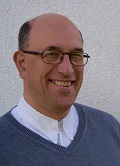

10th International Workshop on Reverse Variability Engineering
12 September 2022, Graz, Austria
held in conjunction with SPLC2022 - 26th International Software Product Line Conference - September 12-16 2022
Introduction
Software Product Line (SPL) migration remains a challenging endeavour
From organizational issues to purely technical challenges, there is a wide range of barriers that complicates
SPL adoption. This workshop aims to foster research about
making the most of the two main inputs for SPL migration:
1) domain knowledge and 2) legacy assets. Domain knowledge, usually implicit and spread across an organization, is key to define the SPL scope and to validate the variability
model and its semantics. At the technical level, domain expertise is also needed to create or extract the reusable software components. Legacy assets can be, for instance, similar product variants (e.g. requirements, models, source code etc.) that were implemented using ad-hoc reuse
techniques such as clone-and-own. More generally, the workshop REverse Variability Engineering (REVE) attracts researchers and practitioners contributing to
processes, techniques, tools, or empirical studies related to the automatic, semi-automatic or manual extraction or refinement of SPL assets.
Held in conjunction with
Workshop organized by
Important dates
Paper submissions (Abstract): June 14, 2022 (AoE time) Paper submissions: June 16, 2022 Paper notifications: July 1, 2022 Final version of papers: July 7, 2022
REVE 2022 Workshop: 12 September 2022
SPLC 2022 Conference:12-16, September 2022
Topics
We will encourage submissions that push the state of the art and practice in the following topics (but not limited to):
Experience reports on SPL migration
Organizational issues on SPL migration
Static, dynamic or information retrieval techniques for legacy assets analysis
Feature identification and location techniques
Feature constraints discovery
Feature model synthesis
Extraction of reusable components
Clone detection techniques
Visualisation techniques during SPL migration
Product Line Architecture reengineering
Refactoring theories and techniques for SPLE
Tacit knowledge and collaboration in SPL migration
Mining variability from software repositories
Literature reviews on reverse engineering in SPLE
Metrics and measurements for SPL migration
Case studies and benchmark examples
Industrial experiences of SPL migration
Tool support for SPL migration
Submission details
REVE proceedings will be included in SPLC proceedings (Volume 2)
Submission types: Authors interested in participating in the workshop are requested to submit either:
Regular paper (max. 8 pages) that presents original research or industrial experience report
Short paper (4 pages) that describes sound new ideas and concepts that are under research or experimental studies at industrial settings.
Format: Submissions must adhere to the latest ACM Master Article Template.
Templates for Word and LaTeX are available at https://www.acm.org/publications/proceedings-template Latex users are indicated to use the “sigconf” option, so they are recommended to use the template that can be found in "sample-sigconf.tex".
In this way, the following latex code can be placed at the start of the latex document:
\documentclass[sigconf]{acmart}
\acmConference[SPLC’22]{26th ACM International Systems and Software Product Lines Conference}{12-16 September, 2022}{Graz, Austria}
Submission: All papers submitted to the workshop must be unpublished original work and must not have been submitted anywhere else for publication. Each paper will be reviewed by three PC members and accepted papers will be selected based on quality, novelty, and relevance to the workshop topic. At least one author should register and present the paper during the workshop.
Papers should be submitted via https://easychair.org/conferences/?conf=splc2022.
Technical Program Committee
Eduardo Figueiredo, Federal University of Minas Gerais, Brazil
Jaime Chavarriaga, University of Los Andes, Colombia
Jaime Font, University San Jorge, Spain
Jennifer Perez, Universidad Politécnica de Madrid, Spain
Marianne Huchard, LIRMM, Université de Montpellier and CNRS, France
Paul Temple, University of Namur, Belgium
Organizers
Roberto E. Lopez-Herrejon, Ecole de technologie superieuré, Montreal, Canada (Main Contact)
Wesley K. G. Assunção, Johannes Kepler University Linz, Austria, and Pontifical Catholic University of Rio de Janeiro (PUC-Rio), Brazil
Tewfik Ziadi, Sorbonne University, UPMC Univ Paris 06, CNRS, Paris, France
Jabier Martinez, Tecnalia, Spain
Steering Committee
Roberto E. Lopez-Herrejon, Ecole de technologie superieuré, Montreal, Canada
Mathieu Acher, Irisa, Inria and University of Rennes 1, Rennes, France
Tewfik Ziadi, Sorbonne University, UPMC Univ Paris 06, CNRS, Paris, France
Jabier Martinez, Tecnalia, Spain
Location
Graz University of Technology, Rechbauerstraße 12, Graz, Austria and online. Check SPLC 2022
Room HS VIII
Workshop program
Joint program for REVE and WEESR workshops
Monday, 12th September. Room HS VIII
Time is in the Central European Summer Time CEST (UTC +2)
9:00 to 12:30 with a 30 minutes Coffee break at 10:00
9:00 - 9:15
Opening and welcome notes by workshop organizers
9:15 - 10:00
Keynote
 Serge Demeyer
Professor at the University of Antwerp (Department of Mathematics and Computer Science) and the spokesperson for the NEXOR research consortium.
His main research interest concerns software evolution, more specifically how to strike the right balance between reliability (striving for perfection) and agility (optimising for adaptability). He is involved in a few start-ups consulting his expertise on software architecture and test automation. Title and abstract of the talk: To be announced.
10:00 - 10:30
Coffee break
10:30 – 10:50
Christoph König, Kamil Rosiak, Lukas Linsbauer and Ina Schaefer Synchronizing software variants: A two-dimensional approach
10:50 – 11:10
Javad Ghofrani, Paria Heravi, Kambiz Aghababazadeh Babaei and Mohammad Divband Soorati Trust Challenges In Reusing Open Source Software: An Interview-based Initial Study
11:10 – 11:30
Ana Eva Chacón-Luna, Antonio Manuel Gutierrez, David Benavides and Lidia Fuentes Design for the analysis of variability management in the industry
11:30 – 11:50
Mohammadali Soleymani, David Morais Ferreira, Vasil Tenev and Martin Becker A Prototype of a Crowd-sourcing Platform for Classification and Integration of Analysis Tools in Product Line Engineering
11:50 – 12:00
Reflection on 10 years of the Reverse Variability Engineering workshop. Contributions, discussions, case study catalogue, and a book.
12:00 – 12:25
Workshop Discussion: all attendees, moderated by workshop organizers